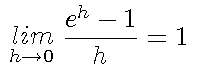

Draw the graph of f(x)=ax for various a. Every graph of this type goes through
point (0,1). Find a special number e so that
the slope of f(x)=ex at (0,1) is equal 1.
Applet
The left side picture magnifies the right picture arround the point
(0,1).
Change a by pressing "Increase a" and
"Decrease a" button.
e is a number that satisfies the condition

This means the slope of f(x)=ex at (0,1) is equal to 1.